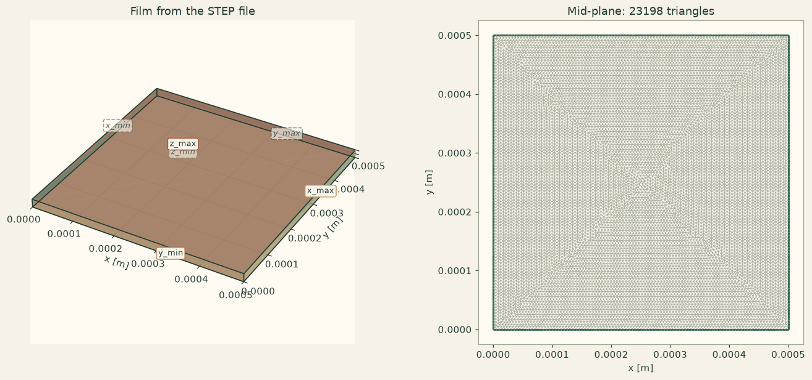

Docs › Examples › Phase separation of a quenched binary mixture
Phase field, Cahn-Hilliard · 2D
Phase separation of a quenched binary mixture
A binary mixture quenched into its unstable range separates into two phases by spinodal decomposition and starts to coarsen.
Run locally with OneSimulation. The example downloads are free. Running them requires an activated runtime. Runtime Alpha 0.2.1a7 · CPython 3.13 on macOS (Apple Silicon), Ubuntu 22.04 (x86-64), and Windows x64. Installation and activation · View pilot plans. Scope of the reference checks.

What it computes
OneSimulation cuts the film from a STEP file and solves the Cahn-Hilliard equation for composition and chemical potential together on 23,000 linear triangles, with no-flux and neutral-wetting edges. The energy-stable convex-splitting step treats the convex part of the double-well energy implicitly and its concave part explicitly; the wave amplitude, the amount of each component and the free energy come from integrals of the solution. The script that builds the STEP file comes with the notebook.
What it checks
The 8 x 8 composition wave grows at 0.461 1/s, 0.2 % from the growth factor of the convex-splitting step and 7.2 % below Cahn's linear theory 0.497 1/s (the first-order time error of 0.1 s steps); the amount of each component stays constant to 1e-17 and the free energy falls in all 300 steps, from 3.32e-4 to 2.75e-4 J/m.
Geometry
The notebook starts at the import of the CAD file binary_alloy_phase_separation.step: STEP (AP242), readable by any CAD program, with the names of the faces that the boundary conditions use. Put it next to the notebook.

The geometry script
The script binary_alloy_phase_separation_geometry.py builds the geometry with the CAD objects of OneSimulation and writes the file. Change a dimension there, run it, and run the notebook again.
"""Geometry of the OneSimulation example "Phase separation of a quenched binary mixture".
Builds a square film, 0.5 mm wide and 20 µm thick, with the CAD objects of OneSimulation and writes
binary_alloy_phase_separation.step. The faces keep their names x_min, x_max, y_min, y_max, z_min
and z_max in the file; the example computes on the mid-plane of the film.
"""
from onesim.cad.d3 import Box
film = Box(length=0.5e-3, width=0.5e-3, height=0.02e-3)
film.save("binary_alloy_phase_separation.step")The notebook
The complete notebook, cell by cell. Run it to produce the figures and the comparison printout.
A thin film of a binary mixture with equal amounts of both components is quenched below its critical temperature. The uniform state is unstable: small composition fluctuations grow, the film separates into regions rich in one or the other component, and these regions then coarsen to lower the interface energy. The order parameter \(c\) runs from \(-1\) (pure A) to \(+1\) (pure B) and obeys the Cahn-Hilliard equation
with the mobility \(M\), the double-well energy \(\psi\) and the gradient coefficient \(\kappa\). Both follow from the interface tension \(\sigma=0.05\) N/m and the interface width \(W=10\) µm.
| boundary | condition | |---|---| | all edges | no flux, \(\mathbf n\cdot M\nabla\mu=0\) | | all edges | neutral wetting, \(\mathbf n\cdot\nabla c=0\) | | initial state | \(c=0.01\cos(8\pi x/L)\cos(8\pi y/L)\) plus noise of amplitude 0.002 |
The film, 0.5 mm wide, comes from the CAD file binary_alloy_phase_separation.step, written by binary_alloy_phase_separation_geometry.py with the CAD objects of OneSimulation.
Reference. J. W. Cahn, On spinodal decomposition, Acta Metall. 9 (1961) 795-801. A composition wave of wave number \(k\) on the uniform state \(c=0\) grows as \(e^{\omega t}\) with
fastest at \(k^2=\beta/(2\kappa)\). The wave of the initial state is chosen there. A time step \(\Delta t\) of convex splitting multiplies the wave by \(g=(1+\Delta t\,M\beta k^2)/(1+\Delta t\,M\kappa k^4)\), so the scheme itself grows at the rate \(\ln g/\Delta t\), slightly below \(\omega\). The total free energy \(\int\psi+\tfrac{\kappa}{2}|\nabla c|^2\,\mathrm dA\) must decrease and the amount of each component must stay constant.
import numpy as np
from onesim.cad.exchange import load
from onesim.meshing import TriangularMesher
from onesim.numerics import Numerics
from onesim.numerics.fem import FiniteElement, Lagrange
from onesim.numerics.linear import SparseDirect
from onesim.numerics.nonlinear import Newton
from onesim.numerics.time import ConvexSplitting
from onesim.physics.hydrodynamics import (
CahnHilliard,
CompositionGradient,
DoubleWellFreeEnergy,
PhaseFlux,
)
from onesim.simulation import Problem, Simulation
from onesim.simulation.initial_conditions import InitialValue
from onesim.visualization import plots, theme
theme.set()Geometry and mesh
section cuts the loaded film at half thickness. Linear triangles of 5 µm resolve the interfaces, which are about four widths \(W\) thick.
film = load("binary_alloy_phase_separation.step")
plane = film.section((0, 0, 1), origin=(0, 0, 1e-5))
side = plane.size[0]
mesh = TriangularMesher(target_size=5e-6).generate(plane)
fig = plots.figure(1, 2, size=(13, 5.5))
plots.geometry(
film,
labels=False,
camera=plots.Camera(elevation=35, azimuth=-60),
title="Film from the STEP file",
ax=fig[0],
)
plots.mesh(
mesh,
groups=("all",),
legend=False,
title=f"Mid-plane: {mesh.cell_count} triangles",
ax=fig[1],
)
plots.show()Model
CahnHilliard solves composition and chemical potential together (mixed form). ConvexSplitting treats the convex part of the energy implicitly and the concave part explicitly, so the free energy decreases for every step size. 300 steps of 0.1 s follow the first 30 seconds.
energy = DoubleWellFreeEnergy(surface_tension=0.05, interface_width=10e-6)
mixture = CahnHilliard(domain=plane.domain(), free_energy=energy, mobility=3.75e-14)
waves = 8
rng = np.random.default_rng(2054)
problem = Problem(
name="Phase separation",
geometry=plane,
physics=(mixture,),
initial_conditions=(
InitialValue(
mixture.composition,
lambda x, y: 0.01
* np.cos(waves * np.pi * x / side)
* np.cos(waves * np.pi * y / side)
+ 0.002 * rng.standard_normal(np.shape(x)),
),
),
boundary_conditions=(
PhaseFlux(physics=mixture, boundary=plane.boundaries.all),
CompositionGradient(physics=mixture, boundary=plane.boundaries.all),
),
)
numerics = Numerics(
spatial=FiniteElement(element=Lagrange(order=1), quadrature_order=3),
linear_solver=SparseDirect(),
nonlinear_solver=Newton(
linear_solver=SparseDirect(), relative_tolerance=1e-9, absolute_tolerance=1e-24
),
time_integrator=ConvexSplitting(),
)
result = Simulation(problem=problem, mesh=mesh, numerics=numerics).run(
start_time=0.0, end_time=30.0, time_step=0.1
)
composition = result.field(mixture.composition)Results
The amplitude of the initial wave is its projection \(\int c\,\phi\,\mathrm dA/\int\phi^2\,\mathrm dA\) on \(\phi=\cos(8\pi x/L)\cos(8\pi y/L)\); its growth rate in the linear stage is compared with Cahn's \(\omega(k)\). The amount of component B and the free energy are integrated over the film.
k = np.sqrt(2) * waves * np.pi / side
growth = (
mixture.mobility
* k**2
* (energy.bulk_coefficient - energy.gradient_coefficient * k**2)
)
mode = composition.derive(
lambda c, p: c
* np.cos(waves * np.pi * p[:, 0] / side)
* np.cos(waves * np.pi * p[:, 1] / side),
name="mode",
unit="1",
).integrate()
times, amplitude = np.asarray(mode.times), np.asarray(mode.values) / (side**2 / 4)
early = (amplitude > 0.012) & (amplitude < 0.05)
first, last = np.flatnonzero(early)[[0, -1]]
measured = np.log(amplitude[last] / amplitude[first]) / (times[last] - times[first])
amount = np.asarray(composition.integrate().values)
free_energy = np.asarray(result.field(mixture.free_energy_density).integrate().values)
step = times[1] - times[0]
discrete = (
np.log(
(1 + step * mixture.mobility * energy.bulk_coefficient * k**2)
/ (1 + step * mixture.mobility * energy.gradient_coefficient * k**4)
)
/ step
)
print(
f"growth rate of the 8 x 8 wave: simulation {measured:.4f} 1/s, Cahn's linear theory {growth:.4f} 1/s ({100 * (measured / growth - 1):+.2f} %), "
f"convex-splitting rate ln(g)/dt {discrete:.4f} 1/s ({100 * (measured / discrete - 1):+.2f} %)"
)
print(
f"amount of component B: largest change {np.max(np.abs(amount - amount[0])) / side**2:.1e} of the film average"
)
print(
f"free energy: {free_energy[0]:.3e} J/m -> {free_energy[-1]:.3e} J/m, steps with an increase: {int(np.sum(np.diff(free_energy) > 0))}"
)
print(
f"composition after {times[-1]:.0f} s: {composition.values.min():.4f} to {composition.values.max():.4f}"
)Figure
The composition at four times: the growing wave, the separated pattern and its coarsening; then the amplitude of the wave against the linear theory and the decreasing free energy.
nearest = lambda t: float(times[np.argmin(np.abs(times - t))])
fig = plots.figure(2, 3, size=(19, 11.5))
for panel, t in zip((fig[0], fig[1], fig[2], fig[3]), (4.0, 8.0, 15.0, 30.0)):
plots.surface(
composition,
time=nearest(t),
limits=(-1.05, 1.05),
subdivisions=2,
xlabel="x [m]",
ylabel="y [m]",
label="c",
title=f"Composition after {nearest(t):.1f} s",
ax=panel,
)
plots.line(
points={"simulation": (times[amplitude < 0.5], amplitude[amplitude < 0.5])},
reference={
"Cahn's linear theory": (
times[times < 12],
0.01 * np.exp(growth * times[times < 12]),
),
"rate of the convex-splitting step": (
times[times < 12],
0.01 * np.exp(discrete * times[times < 12]),
),
},
scale="logy",
xlabel="time [s]",
ylabel="amplitude of the initial wave",
title="Linear stage of the decomposition",
legend="upper left",
ax=fig[4],
)
plots.line(
y={"free energy": (times[1:], free_energy[1:])},
scale="logx",
xlabel="time [s]",
ylabel="free energy per unit thickness [J/m]",
title="The free energy decreases in every step",
ax=fig[5],
)
plots.show()Going further
Shift the mean composition away from zero, for example to \(c=-0.4\), to see droplets nucleate instead of a connected pattern, or take a larger step limit: convex splitting stays stable, only the coarsening is followed less accurately.